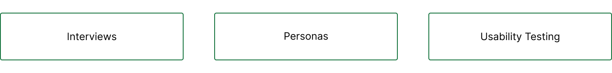
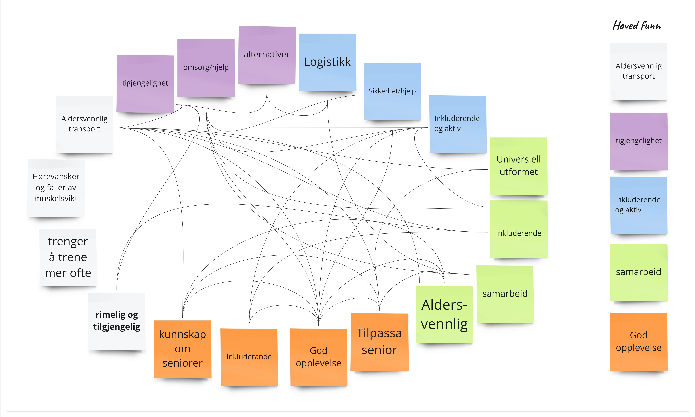
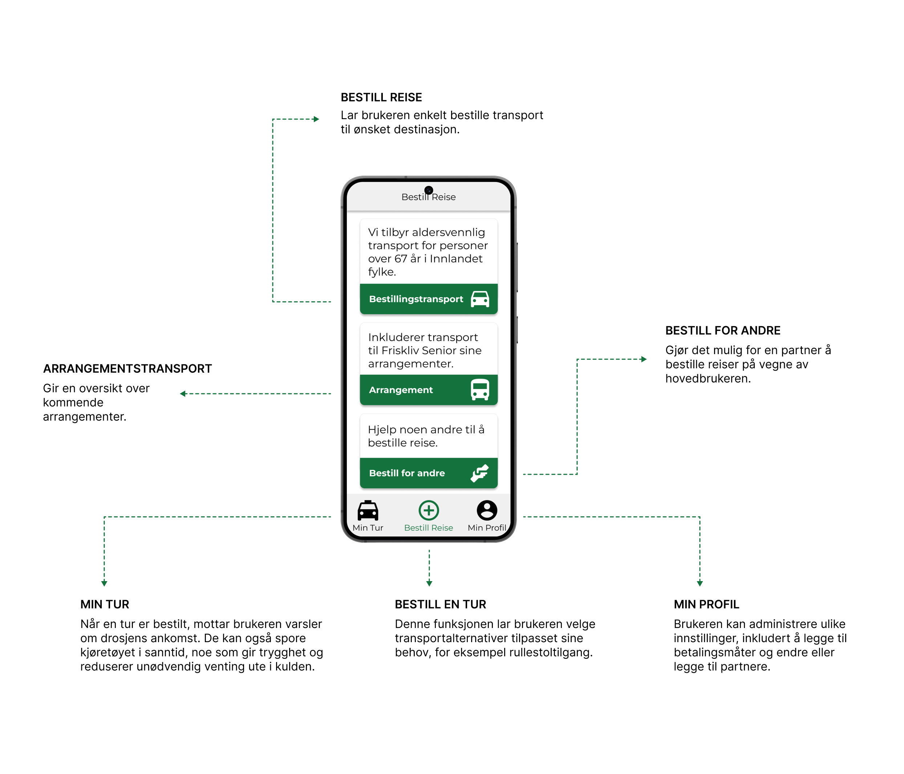

Problemstilling
Etter hvert som vi blir eldre, er det viktig å opprettholde uavhengighet og bo hjemme så lenge som mulig. En viktig faktor for livskvalitet er muligheten til å komme seg ut og møte andre, noe som krever tilgjengelig transport. Vi fikk denne problemstillingen:
Hvilke nye løsninger kan bidra til mer aldersvennlig transport i Gjøvik?
Målet
Målet er å støtte eldre i å bo hjemme så lenge som mulig ved å forbedre transportalternativene.
Teamet og min rolle
Vårt team besto av to grafiske designere og to interaksjonsdesignere. Min hovedrolle var å bidra med verdifulle innsikter fra et interaksjonsdesignperspektiv, ved å bruke verktøy som Figma for å lage prototyper og designløsninger. I tillegg hadde jeg ansvaret for å planlegge og koordinere de fleste møtene, og sikre klar og effektiv kommunikasjon i teamet.
Tidslinje
2 måneder
Verktøy
Figma, Miro, Canva
Designprosessen
Siden dette var en eksisterende tjeneste, var oppgaven vår å foreslå forbedringer for å gjøre den mer ønskelig. Vi gjennomførte flere intervjuer med eldre og et transportselskap, samt forskning på eksisterende løsninger og konsepter både i Norge og utlandet. Vi samlet også tilbakemeldinger og gjennomførte brukertesting med medstudenter, og guerrillatesting for å gjøre forbedringer.
Forskningsmetodene:
Intervju
Vi intervjuet eldre brukere og samarbeidet med transportselskaper i Gjøvik for å få innsikt i begge deres transportutfordringer.
Eldre brukere var generelt fornøyd med transporttjenesten, men opplevde problemer med ventetider, spesielt ved forsinkelser. For eksempel var det et betydelig problem å vente ute i kulda i opptil 30 minutter uten informasjon om når taxien vil ankomme.
Lokale taxiselskaper rapporterte om vanskeligheter med å møte etterspørselen, og trenger en løsning som øker antallet turer uten å øke antallet kjøretøy, noe som er både økonomisk og ressursmessig utfordrende.
Konsept og App-funksjonalitet
Persona
Vår app er designet for Kari, en 74 år gammel kvinne som ønsker å gjøre shopping, ærender og deltakelse i sosiale aktiviteter enklere. Vi laget appen for å hjelpe Kari med å administrere disse oppgavene på en praktisk måte, og forbli aktiv i byens sosiale liv. Målet vårt er å gjøre det enkelt og tilgjengelig for henne.
Hovedfunksjoner
UI Design
Appens grensesnitt har stor tekst og enkle knapper for å sikre god lesbarhet. Vi har lagt vekt på universelle designprinsipper for å sikre at appen er tilgjengelig og brukervennlig for alle, uavhengig av alder eller fysiske evner.
Prototype
Her er en testbar prototype, designet og prototypet i Figma.
Plakat og diplom
Vi brukte Canva for å lage en plakat som forklarte vår tjeneste og fremhevet de viktigste funksjonene.
Av alle gruppene fikk vi et diplom for å ha den beste løsningsforslaget for høstsemesteret.


Hva har jeg lært fra dette prosjektet
Gjennom dette prosjektet har jeg lært hvordan man samarbeider bedre med andre fagfelt, og hvordan vår felles ekspertise gjenspeiles i det endelige produktet. Å intervjue brukergruppen og profesjonelle involverte var veldig nyttig, da det hjalp oss å inkorporere deres tilbakemeldinger i designet.
Ved slutten av semesteret presenterte vi arbeidet vårt for kunden og fikk tilbakemeldinger på det endelige produktet. Selv etter at prosjektet var ferdig, er det spennende å se at det alltid finnes forskjellige måter å forbedre på.